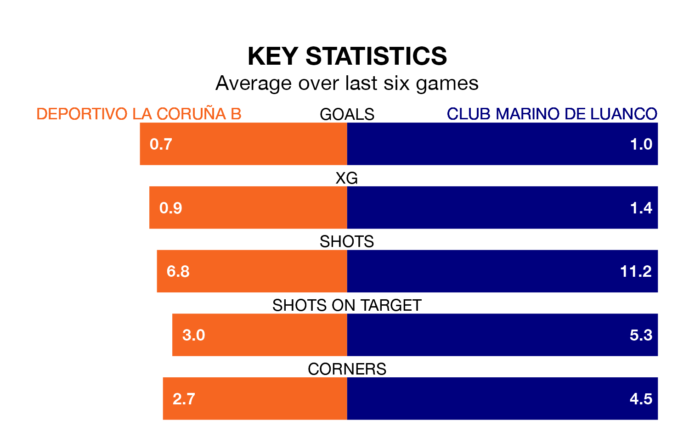

Club Marino de Luanco face Deportivo La Coruña B on Sunday seeking to protect their long unbeaten run in Segunda División RFEF Group 1.
Club Marino de Luanco are unbeaten in five, with two wins and three draws, ahead of the 12pm kick-off.
They face a Deportivo La Coruña B team who have won one and drawn two over the same number of games.
With 15 goals in 19 games so far this season, Club Marino de Luanco are the league's joint-second-lowest scorers with 0.8 goals per game. But they are conceding fewer than average too, letting in 14 goals at a rate of 0.7 per game.
Deportivo La Coruña B, meanwhile, are above average scorers, with 1.2 goals per game, compared to a league average of 1.1. They have also conceded 1.2 goals per game.
The home team are 13th in the table after 19 games, of which they have won five and drawn seven, earning 22 points.
The visitors are one place ahead of Deportivo La Coruña B in 12th, with four wins and 10 draws putting them on the same number of points.
Deportivo La Coruña B's last match was on Sunday, a 1-1 draw against Racing Santander B, with getting the goal for Deportivo La Coruña B.
Club Marino de Luanco drew 0-0 with Ourense CF last time out, also on Sunday.
Updated: 09:07 (UTC), 24/01/24